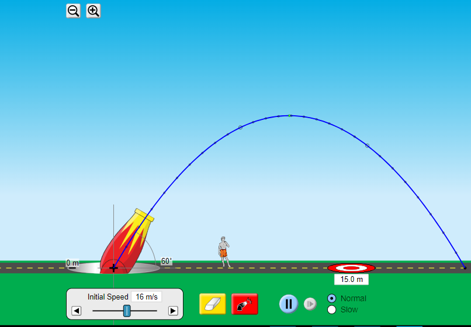

Pasti kamu sudah tidak asing dengan benda-benda yang bergerak. Pada materi sebelumnya kita sudah mempelajari benda yang bergerak lurus secara beraturan (GLB) dan benda yang bergerak lurus berubah beraturan (GLBB). Pada materi ini, kita akan mempelajari gerak benda yang bergerak dan memiliki lintasan berupa parabola.
Gerak parabola memiliki banyak penerapan dalam kehidupan sehari-hari, salah satunya yaitu penerapan di bidang olahraga seperti permainan bulu tangkis, bola voli, tenis meja, sepak bola, dan bola basket.
Pada kegiatan pembelajaran 1 ini kita akan mempelajari pengertian, ciri-ciri, dan besaran-besaran yang terdapat pada gerak parabola.
Pada permainan bola basket, pemain harus melambungkan bola ke arah ring untuk memasukkan bola. Pada permainan badminton, pemain harus saling mengoper kok ke arah lawan pada saat melakukan permainan. Pada permainan bola basket dan badminton tersebut terjadi penerapan gerak parabola.
Untuk lebih memahaminya, yuk simak kedua video berikut ini.
Apakah kalian memahami arti dari gerak parabola? Mengapa kita harus mempelajarinya?
Setelah menonton kedua video di atas, bisakah kamu menggambarkan bagaimana lintasan gerak benda yang terjadi? Gambarkan pada kotak dibawah ini.
Apa saja besaran fisika yang terdapat pada gerak parabola? Bagaimana cara menentukan besaran tersebut dan apa saja yang mempengaruhinya? Tuliskan jawaban sementara menurut pendapat kalian.
Untuk mengetahui jawabannya, yuk lakukan percobaan sederhana menggunakan laboratorium virtual berikut ini.
Pada simulasi kali ini kita akan mengamati bagaimana lintasan yang terbentuk dari benda yang melakukan gerak parabola. Dan dari lintasan tersebut apa saja besaran yang terdapat pada gerak parabola. Untuk melakukannya, perhatikan dan ikuti langkah-langkah berikut ini secara berurutan.
| Percobaan 1 | Percobaan 2 | |
|---|---|---|
| Kecepatan awal (m/s) | ||
| Sudut (°) | ||
| Waktu (s) | ||
| Jarak (m) (Pengamatan) | ||
| Ketinggian (m) (Pengamatan) | ||
| Jarak (m) (Perhitungan) | ||
| Ketinggian (m) (Perhitungan) |
Setelah melakukan percobaan sederhana menggunakan lab virtual, kalian akan mendapatkan hasil percobaan seperti contoh berikut ini.
 Gambar 1.1 Lintasan gerak parabolaDari gambar, dapat kita lihat bahwa gerak parabola memiliki ciri berupa lintasan geraknya yang berbentuk lengkungan.
Dari lintasan yang terbentuk, waktu dan posisi benda dapat diukur menggunakan alat ukur yang tersedia, kemudian kalian akan mendapatkan hasil seperti tabel berikut ini.
| Percobaan 1 | Percobaan 2 | |
|---|---|---|
| Kecepatan awal (m/s) | 16 | 16 |
| Sudut (°) | 30 | 37 |
| Waktu (s) | 0.5 | 1 |
| Jarak (m) (Pengamatan) | 6.93 | 12.78 |
| Ketinggian (m) (Pengamatan) | 2.75 | 4.63 |
| Jarak (m) (Perhitungan) | 6.93 | 12.78 |
| Ketinggian (m) (Perhitungan) | 2.75 | 4.63 |
Data menggunakan perhitungan menggunakan rumus untuk mencari posisi sumbu-x yaitu $$x= v_0 \; cos \theta .t$$ dan posisi sumbu-y yaitu $$y= v_0 \; sin \theta .t - \frac{1}{2} gt^2$$
Jadi, apa itu gerak parabola?
Gerak parabola merupakan gerak suatu objek di udara yang hanya dipengaruhi oleh gaya gravitasi. Dalam arti lain, pada gerak parabola ini gaya penyebab benda bergerak dan gaya gesekan udara diabaikan sehingga gerak benda ditinjau setelah benda diberi kecepatan awal dan bergerak bebas di udara hanya dengan pengaruh gaya gravitasi. Gerak parabola dapat dianalisis sebagai dua gerakan terpisah jika hambatan udara diabaikan. Pada gerak parabola, komponen gerak horizontal memiliki kecepatan tetap sedangkan komponen gerak vertikalnya memiliki percepatan tetap. Namun tetap harus memperhatikan bagaimana posisi benda saat akan bergerak, saat di udara, dan saat kembali ke tanah yang merupakan akibat gravitasi bumi.
Untuk lebih jelasnya, perhatikan beberapa gambar berikut!
Permainan bola basket termasuk salah satu penerapan gerak parabola karena bola basket yang dilempar ke udara dengan sudut elevasi terhadap sumbu-x dan memiliki kecepatan lempar, pada sudut maksimumnya bola hanya memiliki kecepatan dalam arah sumbu-x dan pada arah sumbu y terdapat percepatan gravitasi yang menyebabkan benda bergerak melengkung di sepanjang jalur lintasannya yang berbentuk parabola.
Pada penembakan peluru, sebuah peluru terdorong ke depan dengan laju konstan sampai lintasannya diubah oleh gaya tarik gravitasi bumi sehingga lintasan tersebut berbentuk parabola.
Bom yang dijatuhkan dari pesawat pada ketinggian tertentu memberikan kecepatan awal benda yang hanya ada pada arah sumbu-x sehingga gaya gravitasi bumi menyebabkan bom jatuh hanya seperempat lingkaran yang jika digambarkan lintasannya berbentuk parabola.
Pada gambar di atas, gerak parabola memiliki beberapa titik keadaan seperti:
Pada sumbu-x dan sumbu-y gerak parabola berlaku:
| Besaran | Sumbu-X | Sumbu-Y |
|---|---|---|
| Kecepatan Awal (Titik A) | $$v_{0x}= v_0 \; cos \theta $$ | $$v_{0y}= v_0 \; sin \theta $$ |
| Kecepatan Benda pada Waktu Tertentu (Titik B dan D) | $$v_x=v_{0x}$$ $$v_x=v_0 \; cos \theta $$ |
$$v_y=v_{0y}-gt $$ $$v_y=v_0 \; sin \theta -gt$$ |
| Posisi Benda (Titik B dan D) | $$x=v_{0x}.t$$$$x=v_0 \; cos \theta .t $$ | $$y=v_{0y}.t- \frac{1}{2} gt^2 $$ $$y=v_0 \; sin \theta .t- \frac{1}{2}gt^2 $$ |
Pada gerak parabola, benda memiliki kecepatan pada komponen sumbu-x dan sumbu-y sehingga besar kecepatan benda di setiap waktu (t) detik dirumuskan dengan: $$v= \sqrt {{v_x}^2 + {{v_y}^2}} $$
Dan arah kecepatan benda (sudut elevasi) terhadap sumbu horizontal (sumbu-x) dapat dirumuskan dengan:
$$Tan \; \theta = \frac{v_y}{v_x}$$
CONTOH SOAL!
Dapat kita simpulkan bahwa pengertian dan ciri dari gerak parabola adalah sebagai berikut.
Sebelum melanjutkan ke kegiatan pembelajaran berikutnya, kerjakanlah Asesmen Formatif 1 berikut!